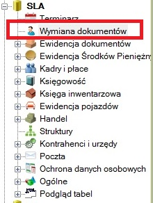
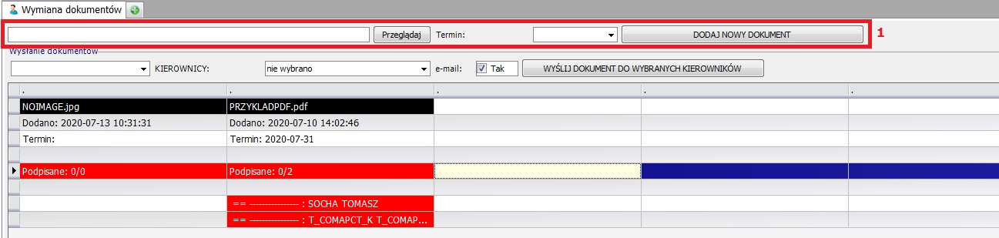
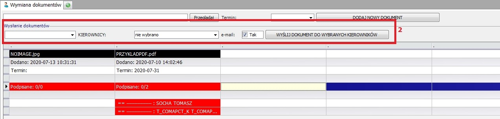
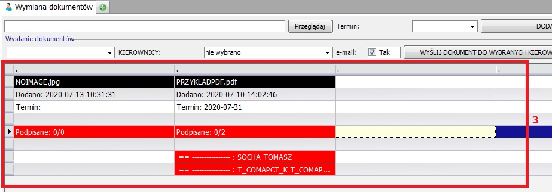
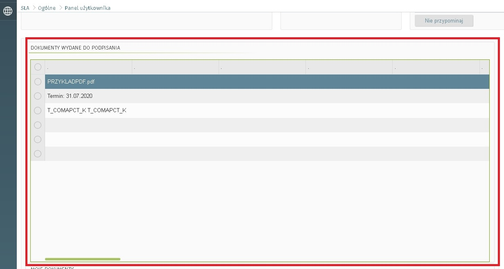
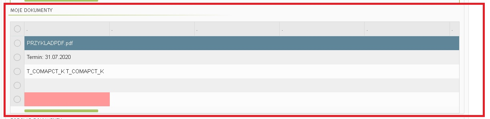
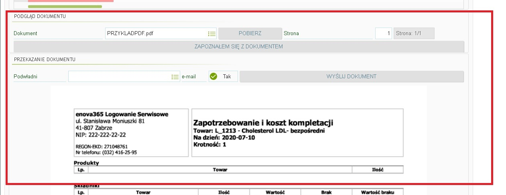

Wymiana dokumentów
Enova w wersji okienkowej

Dostęp do Wymiany dokumentów dostępny tylko dla wybranych użytkowników.
1. Dodanie nowego dokumentu do systemu.

Cześć odpowiedzialna za dodawanie nowego dokumentu. Możemy wybrać dokument na komputerze, który chcemy dołączyć, aby była możliwość jego podpisania. Dodatkowo możemy ustawić Termin, w którym pracownicy mają się z nim zapoznać.
2. Wysłanie dokumentów do kierowników

Zaznaczony dokument wysyłamy wybranym kierowników, aby zapoznali się z dokumentem oraz mogli go przesłać dalej.
Dodatkowo, jeśli pracownik ma uzupełniony adres e-mail, to dostanie również na pocztę informacje o tym dokumencie.
3. Podgląd dokumentów

Widzimy podgląd aktualnej sytuacji z dokumentami (od lewej - najnowsze).
Widzimy tutaj nazwę załącznika, datę dodania oraz termin, do którego wyznaczone osoby mają go potwierdzić.
Niżej widzimy aktualna sytuację, ile osób do których dokument trafił go podpisało, a poniżej widzimy szczegółową listę -> jaki kierownik i jego podwładni mają stan dokumentów.
Czerwony oznacza, że dokument nie jest podpisany - zielony oznacza zapoznanie się z nim.
Enova w pulpitach
1. Część kierownicza

W tym miejscu widzimy nazwę dokumentu, który dostaliśmy do przekazania dalej podwładnym. Widzimy również wyznaczony termin do którego dokument ma zostać podpisany jak i zarówno od kogo ten dokument wpłynął oraz jaki jest jego stan u podwładnych.
2. Część podglądu do podpisania

Widać tutaj dokumenty jakie osobiście dostaliśmy do potwierdzenia wraz z terminem do potwierdzenia oraz ich stany.
3. Część podglądu

Tutaj możemy podejrzeć dokumenty, które dostaliśmy oraz możemy potwierdzić zapoznanie się z tym dokumentem.
Dodatkowo jako kierownik możemy przekazać ten dokument dalej do podwładnych, jeśli pracownik ma uzupełniony adres e-mail, to dostanie również na pocztę informacje o tym dokumencie.